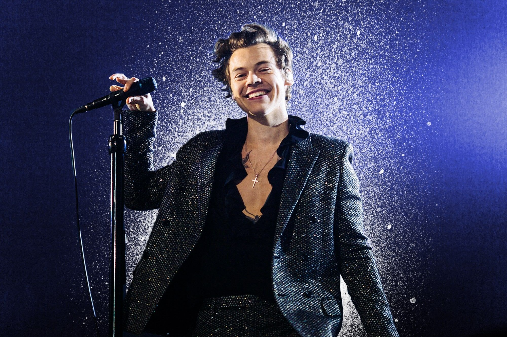

Harry Edward Styles (1 de febrero de 1994, Holmes Chapel, Reino Unido) es un cantante, compositor y actor de origen británico. Inició su carrera en el mundo de la música en el año 2010, como integrante de la banda One Direction, la cual se dio a conocer en el programa The X Factor, quedando en tercer lugar.
Luego de que One Direction anunciara un descanso indefinido, Styles inició su carrera como solista con la publicación de su álbum homónimo en 2017, el cual recibió buenos comentarios de la crítica y debutó en la cima de las listas de los principales mercados del mundo. Del disco se lanzó como sencillo el tema «Sign of the Times», que llegó al puesto número 1 en el Reino Unido y al cuarto puesto en los Estados Unidos. Gracias a dicha canción ganó su primer galardón en los premios Brit.
En 2019, lanzó su segundo álbum como solista, Fine Line, que tuvo buenas críticas y alcanzó la primera posición en varios países con récords en ventas. Del álbum fueron lanzados como sencillos los temas «Lights Up» y «Adore You», que ingresaron al top 10 en el Reino Unido. Asimismo, fue lanzado como sencillo «Watermelon Sugar», que se convirtió en su primera canción en alcanzar el número 1 del Billboard Hot 100 de los Estados Unidos y le valió el Grammy a la mejor interpretación de solista pop, así como su segundo premio Brit.